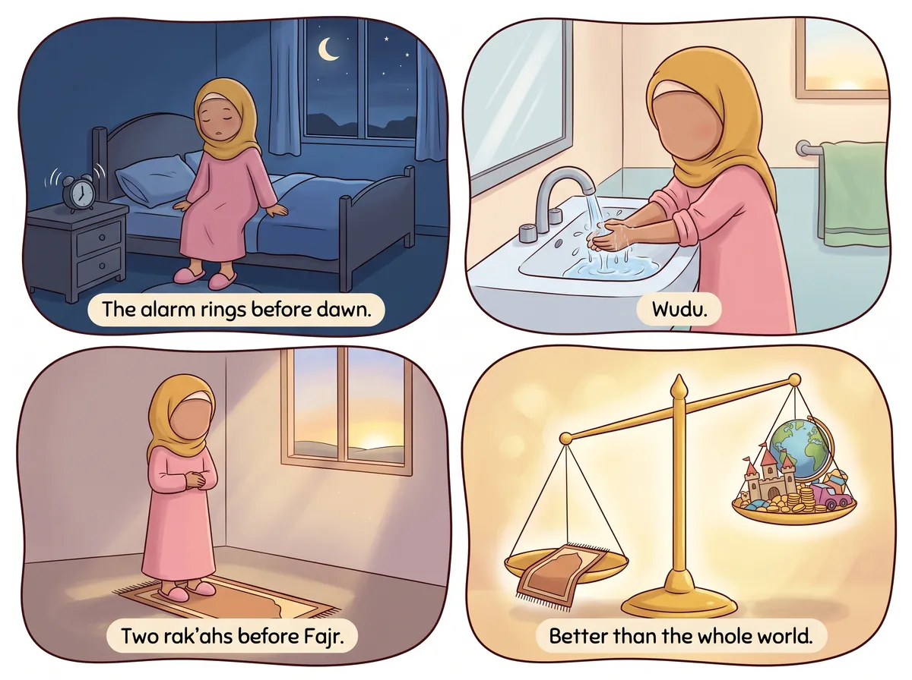
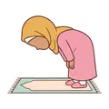
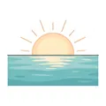

‹ All hadith
The two rak'ahs before Fajr

عَنْ عَائِشَةَ رَضِيَ اللَّهُ عَنْهَا، عَنِ النَّبِيِّ ﷺ قَالَ: رَكْعَتَا الْفَجْرِ خَيْرٌ مِنَ الدُّنْيَا وَمَا فِيهَا
Say it with me: Rak'atā l-fajri khayrun mina d-dunyā wa mā fīhā.
“The two rak'ahs (Sunnah) before Fajr are better than this world and all that is in it.”
Narrated by Aisha (RA) · Muslim
What does it mean for me?
Imagine ALL the toys, sweets, cars and castles in the whole world. Two short rak'ahs of Sunnah prayer before Fajr are better than all of it put together! That's because the reward from Allah lasts forever.🔤 5 words
tap a card to hear it
🔊

رَكْعَتَا
the two rak'ahs
🔊

الْفَجْرِ
of Fajr
🔊
خَيْرٌ
are better
🔊
مِنَ الدُّنْيَا
than the world
🔊
وَمَا فِيهَا
and everything in it
⭐ Let's try it!
Wake up for Fajr tomorrow and pray two Sunnah rak'ahs with your parents before the fard prayer.